If you've ever watched a large language model type out an answer token-by-token, you've felt the core problem of LLM inference: it's sequential. Each new token waits for the previous one to be produced. Meanwhile, your expensive GPU spends most of its time waiting on memory rather than doing math. Speculative decoding is the elegant trick that breaks this bottleneck — and, remarkably, it does so without changing the model's output at all.
This post is a friendly, comprehensive tour of the idea. We'll build intuition from first principles, define the handful of metrics that actually matter, and then walk the evolutionary lineage of techniques — from the original draft-model approach through Medusa, the EAGLE family, and Multi-Token Prediction. Along the way we'll look at how to turn it on in real frameworks like vLLM and SGLang.
What Is Speculative Decoding?
Speculative decoding is an inference-time optimization that speeds up token generation without reducing output quality. The mechanism rests on a partnership between two models:
- The draft model (a small, fast SLM) — proposes several candidate tokens ahead, cheaply and quickly.
- The target model (the big, accurate LLM) — verifies those proposed tokens in parallel, accepting the ones it agrees with.
Because verification of many tokens happens in a single forward pass of the large model, you get the speed of the small model with the exact output distribution of the large one. In practice this often delivers a ~3× speedup in inference latency with guaranteed zero quality loss.
🔑 The headline guarantee: when implemented with rejection sampling, speculative decoding produces tokens drawn from exactly the same distribution as the target model would have produced on its own. You are not trading accuracy for speed — you are getting speed for free.
Why Do We Need It?
To appreciate why this works, you have to understand why autoregressive generation is slow in the first place. There are two ideas worth internalizing.
1. The memory-bound bottleneck
Modern GPUs have enormous compute throughput but comparatively limited memory bandwidth. During single-sequence decoding, every step has to stream the entire model's weights from memory just to produce one token. The arithmetic units sit largely idle waiting for those weights to arrive — the hardware is starved on bandwidth, not on math. This is the classic memory-bound regime, and it's why generating one token at a time wastes most of your GPU.
2. The predictability paradox
Here's the insight that makes the whole thing work: many tokens are
"obvious." Closing a bracket, finishing a common word, completing
a boilerplate phrase — these can be predicted correctly by a much smaller,
cheaper model. We don't need the full power of a 70B-parameter model to
guess that "def " is often followed by a function name, or
that "San" is frequently followed by "Francisco".
💡 The opportunity: since the GPU is idle during sequential decoding anyway, we can spend that spare compute verifying a batch of cheap guesses. Parallel verification turns wasted bandwidth-bound time into useful work, drastically reducing Inter-Token Latency (ITL).
How Does It Actually Work?
At a high level, speculative decoding runs as a loop. Each round, the small model races ahead with a guess, and the big model checks the work.
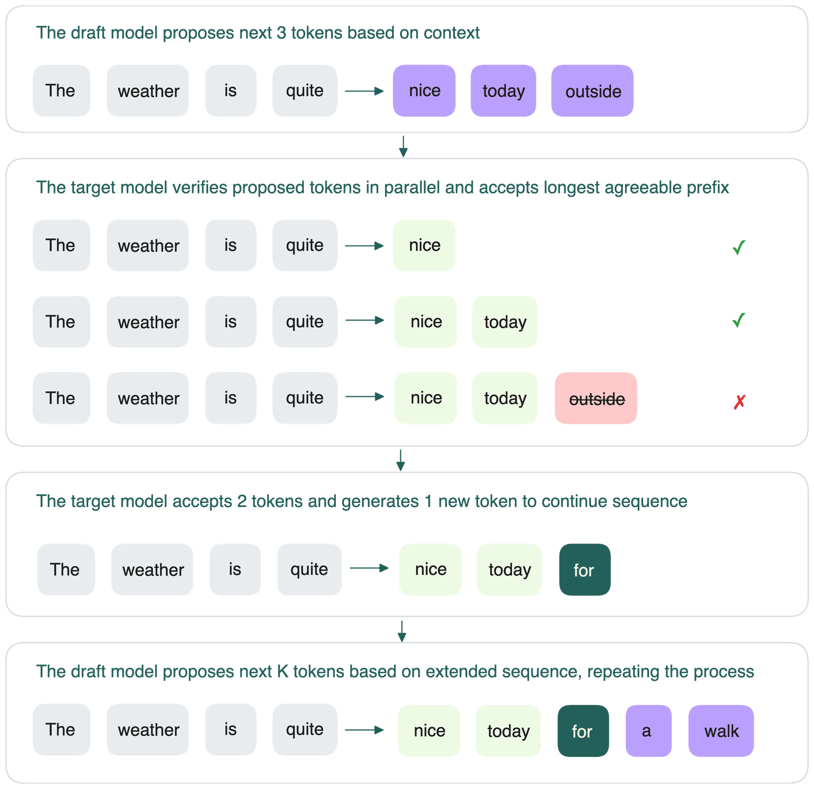
-
Draft prediction — the draft model predicts the
next
K(= γ) tokens that follow the current input sequence. -
Parallel verification — the target model verifies all
Ktokens at once, in a single forward pass, checking whether it would have predicted them too. -
Prefix acceptance — the target accepts the
longest prefix of those
Ktokens that it agrees with. -
Correction step — if it accepted
htokens, the target then generates the(h+1)-th token itself, keeping generation on the rails. (Crucially, this correction token is essentially free — it comes out of the same verification pass.) - Recurrence — the loop repeats on the new, extended sequence.
The beauty is in step 4: even in the worst case where every guess is wrong, you still get one correct token per round — exactly the same as plain autoregressive decoding. So speculative decoding can never be slower than the baseline in terms of token correctness; it can only win.
The Three Metrics That Matter
Three variables govern how much speedup you actually get. If you only remember three Greek letters from this post, make it these.
| Symbol | Name | What it means |
|---|---|---|
| α (alpha) | Acceptance Rate | Probability that a drafted token is accepted. Higher α means better latency and GPU utilization. |
| γ (gamma) | Speculative Count | How many tokens the draft proposes per step. A key configurable hyperparameter. |
| τ (tau) | Acceptance Length | Average number of tokens accepted per round. The primary indicator of real wall-clock speedup. |
The interaction between drafting accuracy (α) and draft length (γ) is what ultimately dictates system efficiency. Push γ too high with a weak draft model and you waste compute on guesses that get rejected; keep γ too low and you leave speedup on the table.
How acceptance rate impacts performance
To study the theoretical limits, the vLLM engine can be patched to simulate decoding at arbitrary α and γ values — decoupling the algorithm's potential from any particular draft model's quality. The findings make the role of acceptance accuracy vivid.
- Linear correlation. Latency drops and throughput rises almost linearly as α increases. A higher acceptance rate consistently produces greater speedup.
- Diminishing returns on γ. Increasing the speculative count only helps when τ is already high. Otherwise, the overhead of generating and verifying a longer draft can actually hurt performance.
⚡ The sweet spot: at α ≥ 0.6 and γ ≥ 5, simulations achieved 2–3× speedups.
📌 A note on honesty: in practice, real-world speedups were lower than these theoretical simulations. Drafting overhead, batching effects, and scheduling all eat into the idealized numbers — something to keep in mind before promising 3× to your stakeholders.
What Makes One Method Different From Another?
Every speculative decoding method can be understood along two axes. Once you internalize these, the whole research landscape snaps into focus:
- Draft generation mechanism — how do we make the guesses? A separate small model? Extra prediction heads bolted onto the target? A lightweight feature predictor?
- Verification topology — how do we organize and validate those guesses in a single forward pass? A linear chain? A branching tree of candidates?
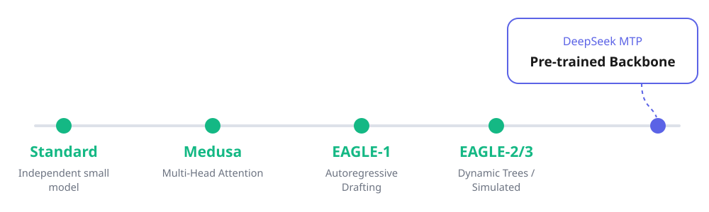
The Lineage, Method by Method
Standard speculative decoding (the draft model)
The original formulation (Leviathan et al., 2022) uses an
independent small model Mq alongside the
target Mp.
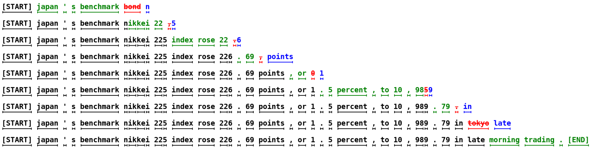
-
Draft generation: autoregressive guessing — the small
model
Mqruns sequentially to generate γ look-ahead candidate tokens(x₁, ..., xγ). -
Verification: the target
Mpprocesses all γ tokens simultaneously. Rejection sampling then decides acceptance — tokeniis accepted ifrᵢ ≤ pᵢ(xᵢ) / qᵢ(xᵢ), and the chain stops at the first rejection. (When a token is rejected, a replacement is sampled from a corrected residual distributionp'(x), which is what preserves the exact output distribution.)
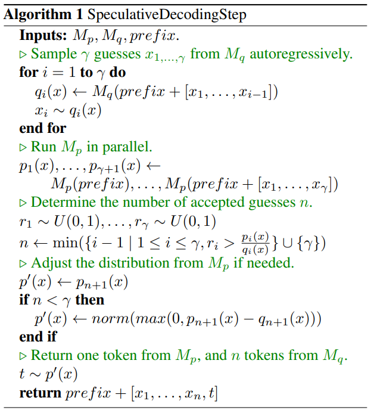
min(1, pᵢ/qᵢ); and on the first rejection a token
is resampled from the corrected residual p'(x). This is the
step that guarantees the output matches the target's distribution.
This clean approach has real limitations:
-
Distribution mismatch — if
qdiverges fromp, the acceptance rate drops and the speedup evaporates. - Memory overhead — you must host a second model in VRAM alongside the target.
- Low-latency issues — in memory-bound scenarios, the drafting overhead can outweigh the benefit.
- Sequential break — a single wrong guess wastes the rest of that parallel block.
Medusa — drop the draft model, add heads
Medusa asks: what if we don't need a separate model at all? Instead, it attaches multiple decoding heads directly to the target model.
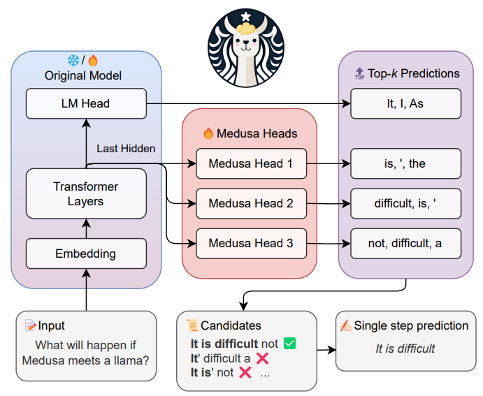
k
options are combined into candidate continuations and verified together.
- Draft-model-free — eliminating the companion model cuts the memory overhead.
-
Multiple decoding heads — extra feed-forward heads
predict future tokens (
t+2,t+3, ...) simultaneously. - Compute-bound efficiency — it leverages parallel block generation to convert the otherwise-idle compute into throughput.
Medusa also upgrades the verification topology to a
tree of candidates: instead of one linear sequence, it
builds a branching tree of top-k token combinations and uses
tree attention to validate dozens of paths in one forward
pass. Because multiple branches are checked at once, generation can
continue even if one path is rejected.
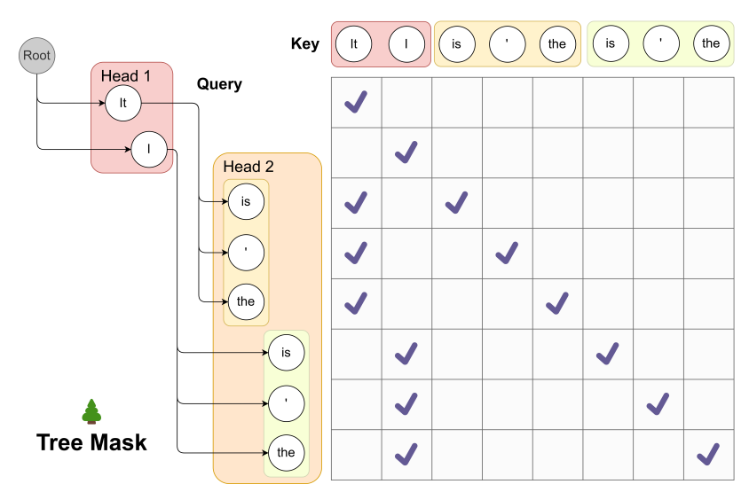
Medusa's trade-offs:
- Training overhead — the heads need extra fine-tuning, often on domain-specific data.
- Memory overhead — tree verification expands the KV cache footprint.
- Inter-head dependency — the heads lack autoregressive dependency on each other, so predictions skip intermediate token context.
⚡ Medusa delivers up to ~2× speedup.
EAGLE — predict features, not tokens
EAGLE makes a subtle but powerful change. Rather than predicting the next token directly, its draft module — a single, lightweight Transformer decoder layer — predicts the hidden feature vector of the next step. Working in feature space turns out to be much more learnable, which boosts acceptance.
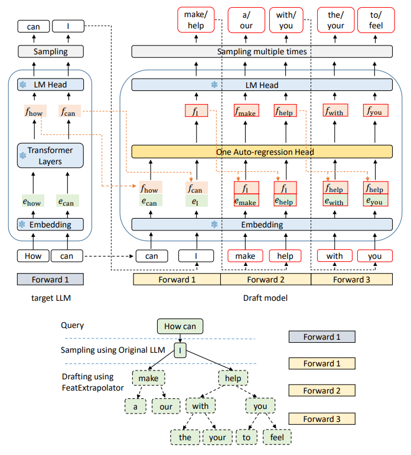
- EAGLE-1: feature-level drafting with static tree attention. Its limitation is the fixed tree layout, which can't adapt to easy vs. hard prompts.
- EAGLE-2: introduces a dynamic tree layout. It uses real-time confidence scores to prune weak branches and deepen promising ones on the fly — and requires no extra training over EAGLE-1.
- EAGLE-3: the current state of the art. It adds a training-time test that bridges the training–inference gap by training the draft head on its own imperfect predictions.
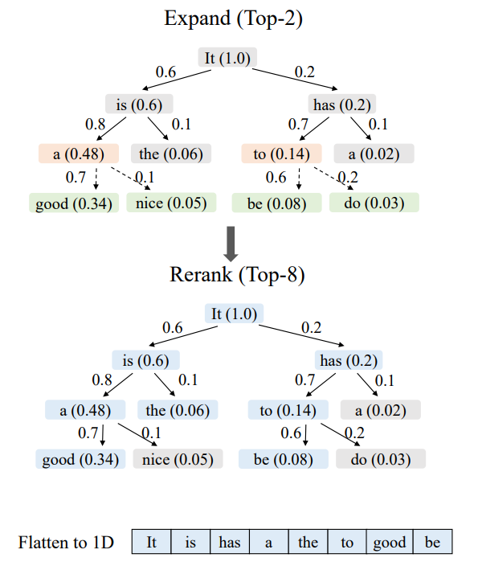
EAGLE-3's training-time test runs in three steps:
- Simulation — the draft head generates a noisy draft tree containing realistic prediction errors.
- Verification — the target LLM processes that noisy tree to produce ground-truth targets.
- Optimization — the draft head is trained for error-correction based on its own noisy history, so it learns to recover from its mistakes at inference time.
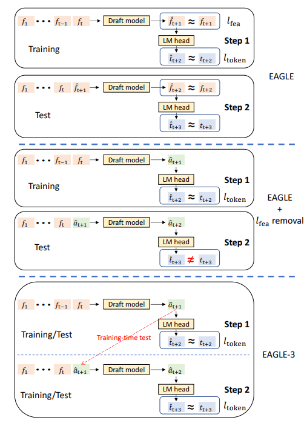
🏆 By training the draft head against its own error distribution rather than perfect teacher-forced data, EAGLE-3 closes the gap between how the model is trained and how it's actually used — which is exactly why it reaches SOTA acceptance lengths.
DeepSeek MTP — bake it into the backbone
Multi-Token Prediction (MTP) takes the most radical stance: build the speculation capability into the model from day one.
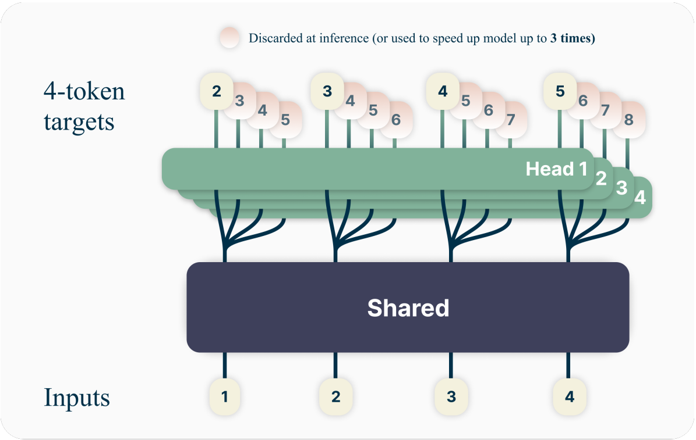
- Draft generation: sequential MTP modules are natively integrated into the backbone during pre-training. Each module maintains its own hidden states sequentially, so drafts inherit the full quality of the base model.
- Verification: linear or tree verification validates multiple sequential steps inline.
- Limitation: it cannot be added post-hoc — you need expensive pre-training alongside the base model. You either have MTP from the start, or you don't.
Lookahead Reasoning — speculate on whole steps
A 2025 direction pushes the granularity of speculation upward. Where traditional methods work at the token level, Lookahead Reasoning works at the step level.
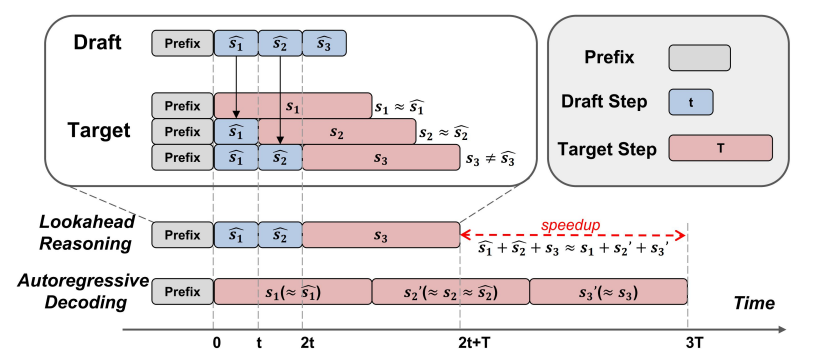
ŝ₁, ŝ₂, ...) rather than single tokens,
and verifies them by semantic equivalence in parallel —
collapsing several target steps into one wall-clock span.
| Aspect | Traditional SD | Lookahead Reasoning (2025) |
|---|---|---|
| Draft granularity | Token-level — predicts γ individual tokens | Step-level — predicts entire reasoning steps (sentences / logical blocks) |
| Verification | Exact-match; chain breaks at first misaligned token | Semantic & batched; 2D parallelism verifies future steps via semantic outcomes |
This is especially compelling for reasoning models, where being slightly "wrong" on an exact token doesn't matter if the logical step is correct — semantic verification is far more forgiving than strict statistical alignment.
Turning It On in Real Frameworks
The good news: you rarely have to implement any of this yourself. Both vLLM and SGLang expose speculative decoding through configuration.
vLLM
A classic draft model — pair a big target with a small drafter:
from vllm import LLM
# Draft-model speculative decoding
llm = LLM(
model="Qwen/Qwen3-8B",
tensor_parallel_size=1,
speculative_config={
"model": "Qwen/Qwen3-0.6B", # the small drafter
"num_speculative_tokens": 5, # this is γ
"method": "draft_model",
},
)EAGLE — point at a trained EAGLE head for the target model:
llm = LLM(
model="meta-llama/Meta-Llama-3-8B-Instruct",
tensor_parallel_size=4,
speculative_config={
"model": "yuhuili/EAGLE-LLaMA3-8B",
"draft_tensor_parallel_size": 1,
"num_speculative_tokens": 2,
"method": "eagle",
},
)Multi-Token Prediction — for models that ship with MTP modules:
llm = LLM(
model="XiaomiMiMo/MiMo-7B-Base",
tensor_parallel_size=1,
speculative_config={"method": "mtp", "num_speculative_tokens": 1},
)SGLang
SGLang exposes the same families through launch flags. Here's EAGLE-3, which exposes the tree-shape knobs directly:
python3 -m sglang.launch_server \
--model meta-llama/Meta-Llama-3.1-8B-Instruct \
--speculative-algorithm EAGLE3 \
--speculative-draft-model-path jamesliu1/sglang-EAGLE3-Llama-3.1-Instruct-8B \
--speculative-num-steps 3 \
--speculative-eagle-topk 4 \
--speculative-num-draft-tokens 16 \
--mem-fraction-static 0.7 \
--dtype float16
The same server also supports a standalone draft model (STANDALONE,
via Spec V2) and MTP — the pattern is consistent: pick an algorithm, point
at a draft, and tune the step / top-k / draft-token counts.
Tuning the Speculative Length
Choosing γ (how many tokens to draft per step) is the main knob you will turn. Two approaches dominate:
- Empirical grid search & profiling. The most common approach: run benchmark queries with varying draft lengths against your specific hardware and workload, and measure. The optimum depends on your model pair, batch size, and sequence length, so there's no universal magic number.
-
Dynamic Speculation Length (DSL). An adaptive scheme
using a confidence-threshold early-exit: the draft stops proposing as
soon as its confidence drops, instead of always emitting a fixed
γ. (See the ongoing work in
vllm-project/vllmissue #36657.)
How Do We Measure Success?
Because speculative decoding is purely a systems optimization, evaluation spans both quality-neutral throughput and a spread of task domains to make sure acceptance holds up across workloads.
Datasets
| Dataset | Domain | What it covers |
|---|---|---|
| HumanEval | Coding & logic | 164 hand-written Python problems with unit tests |
| SWE-bench | Software engineering | 2,294 problems from real GitHub issues and PRs |
| Aider Polyglot | Multi-language | Coding challenges across several languages |
| MT-Bench | Conversational | 80 multi-turn prompts across 8 categories |
| AlpacaEval | Open-ended | 805 instructions testing general knowledge |
| Spec-Bench | Speculative focus | Tasks curated specifically to evaluate speculative decoding |
Metrics
- Speedup ratio — generation throughput (tokens/sec) versus the standard autoregressive baseline.
- Per-request throughput — real-world end-to-end latency in production or multi-user environments.
- Acceptance rate (α) — the conditional probability that a drafted token matches the target's distribution.
- Mean acceptance length (τ) — the average number of tokens validated and accepted per verification step.
Putting Numbers to It
So how do the methods actually stack up? The figure below collects reported speedups and acceptance lengths (τ) across several models and tasks at greedy decoding (temperature = 0).
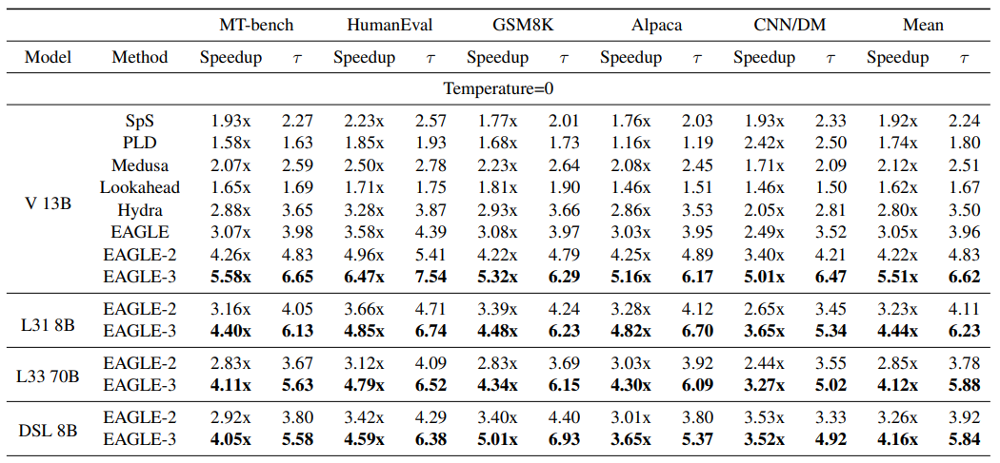
Two things jump out. First, the family matters far more than the task: EAGLE-3 leads everywhere, which is exactly what you'd expect from a method that maximizes acceptance length. Second, the gains compound with model size in your favor — even on a 70B model, EAGLE-3 sustains a ~4× speedup, because the bigger and more memory-bound the target, the more there is to gain from verifying cheap drafts in parallel.
Conclusion
Speculative decoding is one of those rare optimizations that feels like a free lunch — and, mathematically, very nearly is. By recognizing that sequential decoding wastes GPU bandwidth and that many tokens are easy to guess, it converts idle compute into parallel verification and buys real latency wins with provably zero change to output quality.
The field has matured fast. We've gone from "run a small model alongside the big one" to feature-level prediction (EAGLE), self-correcting training-time tests (EAGLE-3), heads baked into pre-training (MTP), and semantic step-level speculation (Lookahead Reasoning). The two questions never change, though: how do we draft, and how do we verify. Keep your eye on the three metrics — α, γ, and τ — and you'll be able to reason about any new method that comes along.
If you're serving LLMs today, speculative decoding is no longer exotic: it's a config flag away in vLLM and SGLang. Just remember to profile on your own workload — the theoretical 3× is a ceiling, not a promise.
📚 Key references:
- Source deck — The Anh Tran, AISys Team, Research on Speculative Decoding: A Comprehensive Survey — Google Slides
- Leviathan et al., Fast Inference from Transformers via Speculative Decoding — arXiv:2211.17192
- EAGLE: Speculative Decoding via Feature-level Predictors — arXiv:2401.10774
- EAGLE-2: Context-aware Dynamic Draft Trees — arXiv:2406.16858
- EAGLE-3: Scaling Inference Acceleration via Training-time Test — arXiv:2503.01840
- Speculative decoding research archive — arXiv:2401.15077
Comments
Share your thoughts about this post.